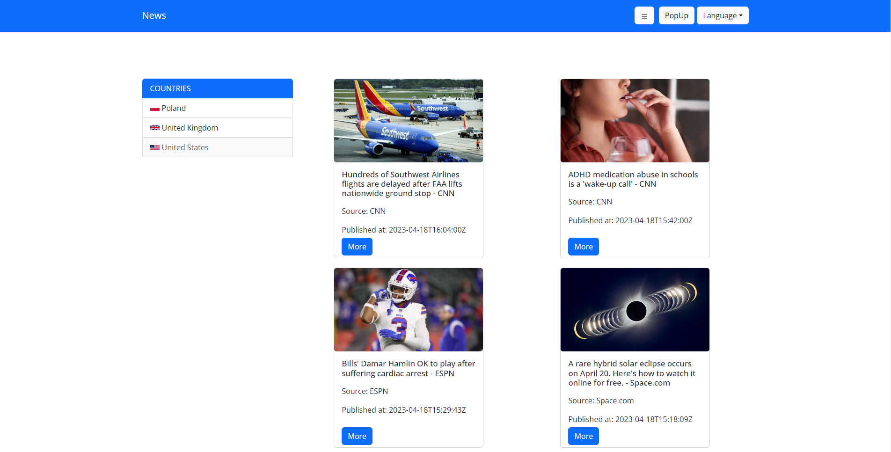

Here you will find some of the personal projects that I created
Note: All of these projects I created on my own and didn't follow
any tutorial
RamenSwap
I built a frontend for a website that is a decentralized token
exchange. The project was done by a team of three.
Technologies used: React, Typescript, Redux Toolkit, Sass,
Bootstrap, Git, Vite, React Router, Axios, Portals API, React
Icons, Wagmi, Ethers.

gnNews
Website done for recruitment. You can fetch the news from
newsapi, change language, change the news layout, check news
details, check out the time, and see a list of current visible
articles. Technologies used: React, Typescript, Redux Toolkit,
Sass, Bootstrap, Git, Vite, React Router, Axios, API, React
Icons, i18next
Starbucks
The website is done for a purpose of testing my CSS skills. I
copied Starbucks' design and remade it on my website.
Technologies used: HTML, CSS